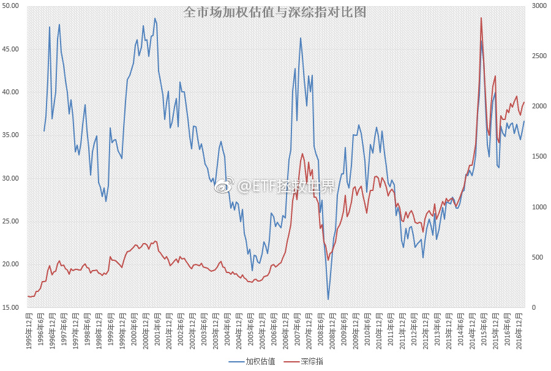

其实我更好奇的是，某队到底在市场中在干什么。当初是说为了防止出现危机，一万多亿砸下去。到现在两年过去，依然不断翻云覆雨。从昨天的图上可以看出，这样长期持续的高估状态几乎从未出现过。未来绝大多数投资者面对的必然是长期收益率很低。简单，粗暴，用钱把任何波动抹平，真心佩服。---:抱歉，此微博已被作者删除。查看帮助： 网页链接
今天是GJD和估值图的对决吧……@ETF拯救世界:热腾腾的加权估值新鲜出炉。今天收盘后的数据，是2015年12月第三轮熔断前以来，按月计算加权估值最高的时候。大概是36.x。我个人不太相信会升到40以上，那将是另一次灾难的开始。不过，怎么说呢，金融市场的事谁说的准。真到了40以上，等着看热闹就对了。 
近期不少人从股灾的坑里爬出来或者爬出来半个身子，突然觉得自己能力是有的，之前资产大幅缩水是偶然的，以前的路子要坚持。其实，如果没有一万多亿在里面每天帮忙护盘，没有某妈面多了加水水多了还加水帮大家灌水，很多人早就爆仓二十次了。不过该发生的迟早会发生。人各有命。
影响力已经这么大了？ 评论配图@ETF拯救世界:热腾腾的加权估值新鲜出炉。今天收盘后的数据，是2015年12月第三轮熔断前以来，按月计算加权估值最高的时候。大概是36.x。我个人不太相信会升到40以上，那将是另一次灾难的开始。不过，怎么说呢，金融市场的事谁说的准。真到了40以上，等着看热闹就对了。